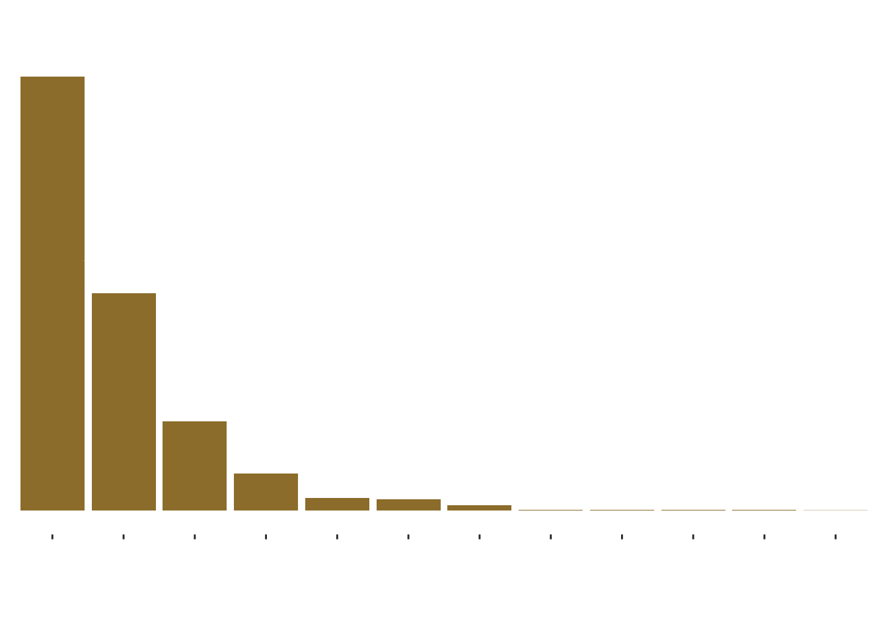

Making FYP Poster Figures
I am going to make a pedigree, relatedness matrix, interactive relatedness matrix, and fancy survival graph, and then try to get the figure to match my poster color theme. I am also going to try out some cool visualizations of the different kinship links available in the NLSY (though in the poster I end up just using a table for a cleaner look)
library(NlsyLinks)
library(ggplot2)
library(BGmisc)
library(ggpedigree)
library(tidyr)
library(dplyr)
library(stringr)
library(forcats)Part 1: Pedigree of Family 820.
I picked family 820 because it is one of the larger families available in the data.
Part 2: Survival graph
Part 3: Kinship links visualization
First, here are the different relatedness values and their frequency
r <- c(0, 0.015625, 0.03125, 0.0625, 0.09375, 0.125, 0.1875, 0.25, 0.375, 0.5, 0.75, 1 )
n <- c(1925, 55, 291, 604, 12, 4629, 24, 11294, 647, 22545, 24, 38)
relatedness <- data.frame(r,n)
relatedness <- relatedness %>%
mutate(r = as.factor(r))Here is the first crack at it:
ggplot(relatedness, aes(x=reorder(r, -n), y=n)) +
geom_col(scale_fill_manual = c("gold")) +
theme(
panel.background = element_rect(fill = "#060606"),
plot.background = element_rect(fill = "#060606"),
panel.grid = element_blank(),
legend.text = element_text(color = "white"),
legend.title = element_text(color = "white"))## Warning in geom_col(scale_fill_manual = c("gold")): Ignoring unknown
## parameters: `scale_fill_manual`
This makes it gold, transparent, and saves it directly to my computer so I can upload it into my poster:
plot <- ggplot(relatedness, aes(x = reorder(r, -n), y = n)) +
geom_col(fill = "#9E7E38") +
# Add the text labels on top of the bars
geom_text(
aes(label = n),
vjust = -0.5, # Adjust vertical position (negative moves it up)
color = "white", # Match your dark theme
size = 7,
# angle = 45,
# Adjust font size as needed
family = "Baskerville") +
#theme_minimal(base_family = "cormorant") +
theme(text = element_text(family = "Baskerville", color = "white"),
panel.background = element_rect(fill = "transparent", color = NA),
plot.background = element_rect(fill = "transparent", color = NA),
panel.grid = element_blank(),
# Hide the y-axis elements
axis.text.y = element_blank(),
axis.ticks.y = element_blank(),
axis.title.y = element_blank(),
# Style the x-axis for visibility
axis.text.x = element_text(color = "white", angle = 45, # Slants the text (45 or 90 are most common)
hjust = 1, size = 14),
axis.title.x = element_blank()
) +
# Expand the y-axis slightly so the top label doesn't get cut off
expand_limits(y = max(relatedness$n) * 1.1)
ggsave('plot.PNG', plot, bg = 'transparent' )## Saving 7 x 5 in imageplot